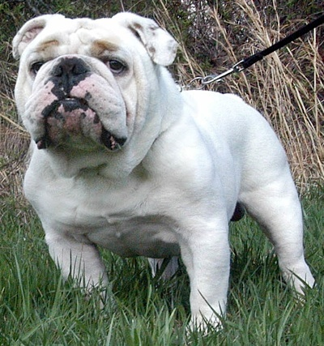
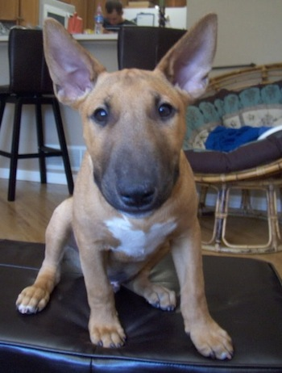
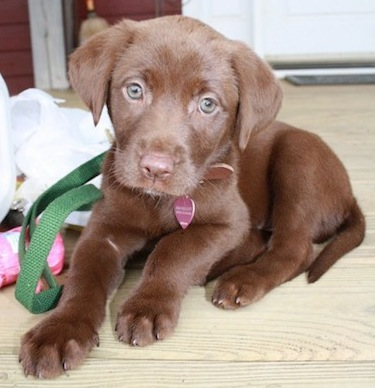
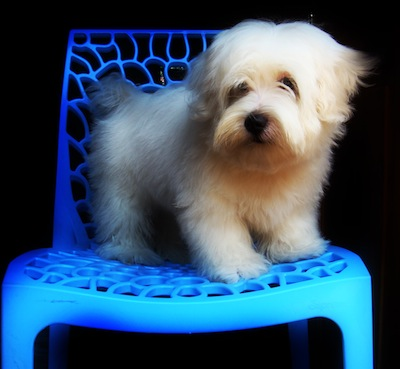

Qual a melhor raça de cachorros para crianças?
- mora em casa ou apartamento?
- Quer um cachorro para ser parceiro em atividades?Brincar? Terapia?
- Você mora no campo ou na cidade?
- Alguém da familia é alérgico a cães?
- Está disposto a cuidar do cão com frequência?
- É rígido com limpeza?
- Fica preocupado com bagunça?
Veja algumas raças:
- Bulldog

- Embora a aparência do Bulldog Inglês pode ser um pouco intimidante, está entre o mais gentil dos cães. Apenas o mesmo que vai ver fora qualquer intruso, e poucos arriscariam um encontro próximo com um cão corajoso o suficiente para atrair um touro. É descrito como um animal muito carinhoso e confiável, gentil com as crianças, mas conhecido por sua coragem e suas excelentes habilidades de guarda.
- voltar
- BullDog
- Beagle

- O Beagle é amoroso, doce e gentil, feliz de ver todos, cumprimentá-los com uma cauda abanando. É sociável, corajoso e inteligente. O Beagle é excelente com crianças e geralmente bem com outros cães, mas por causa de seus instintos de caça, não deve ser confiado com animais de estimação não-caninos, a não ser socializados com gatos e outros animais domésticos quando jovens
- voltar
- Beagle
- Bull Terrier

- Antigamente esta raça era considerada um gladiador feroz, agora é vista como um cão dócil. O Bull terrier pode ter um efeito preventivo e pode defender seu dono em uma situação verdadeiramente crítica, mas não é criado para ser um cão de guarda. Corajoso, desconexo, divertido, carinhoso, ativo, palhaço e destemido, o Bull Terrier é um cão educado, obediente e leal. Ele se torna muito ligado aos seus donos.
- voltar
- Bull Terrier
- Collie

- O Collie é um cão muito inteligente. Sensível, meigo, doce, fácil de treinar e leal, é geralmente bom com outros animais de estimação e amigável com outros cães. Eles são pastores naturais; filhotes podem tentar os humanos rebanho, e precisam ser ensinados a não fazer isso. Fiel, brincalhão, dócil e protetora de seus familiares e bom com crianças
- voltar
- Collie
- Labrador

- Uma das raças mais populares nos EUA, o Labrador é leal, amoroso, carinhoso e paciente, fazendo com que um cão grande da família. Muito inteligente, bem-humorada, muito disposto e ansioso para agradar, ela está entre as melhores opções para o trabalho de cão de serviço. Labs gostam de jogar, especialmente em água, nunca querer deixar passar a oportunidade para um bom mergulho. Estes cães vivos têm uma excelente temperamento, confiável e amigável, excelente com crianças e uniforme com outros cães.
- voltar
- Labrador
- Lhasa Apso

- Este é um cão resistente com uma maneira amigável, assertivo. Inteligente e animada, faz um bom animal de estimação. Lhasa Apso são pequenos cães espirituoso e dedicados que são afetuoso com seus donos. Eles podem ser muito obediente a seus mestres. Esta raça responde ao treinamento motivacional. Eles têm um grande senso de audição, e fazer bons cães de guarda. O Lhasa Apso viaja bem. Infelizmente, este pequeno cão, muitas vezes cai em Síndrome de cão pequeno , um comportamento humano induzido onde o cão pensa que é líder do bloco para os seres humanos. Isso faz com que muitos graus variados de comportamentos negativos para sair no cão. Tornam-se desconfiado com estranhos, e não pode tolerar crianças
- voltar
- Lhasa Apso